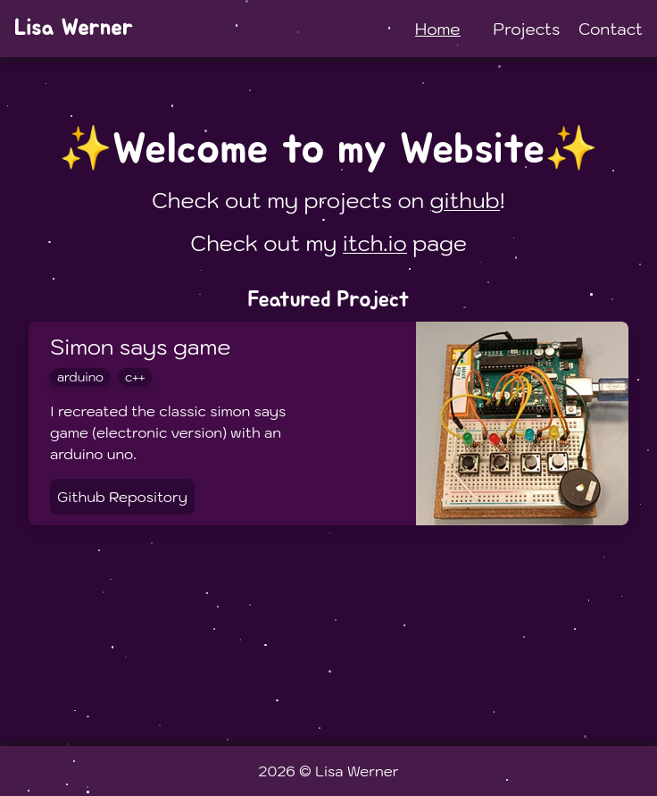

Simon says game
I recreated the classic simon says game (electronic version) with an arduino uno.
Github Repository

I recreated the classic simon says game (electronic version) with an arduino uno.
Github Repository